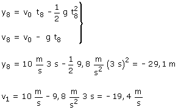

h)
Ecuaciones del movimiento:
|
|
|
Parámetros: v0 = 10 m/s, g = 9.8 m/s2 |


Aplicación:
Datos: t8 = 3 s, Incógnitas: y8 , v8

Como el observador está en el suelo, una posición negativa significaría que la piedra está por debajo del suelo. Entonces los resultados obtenidos a partir de las ecuaciones del movimiento no son validos porque al tocar el suelo la piedra deja de ser un grave
Lo único que se puede contestar es que al cabo de 3 s la piedra ya habrá llegado al suelo y posiblemente esté parada